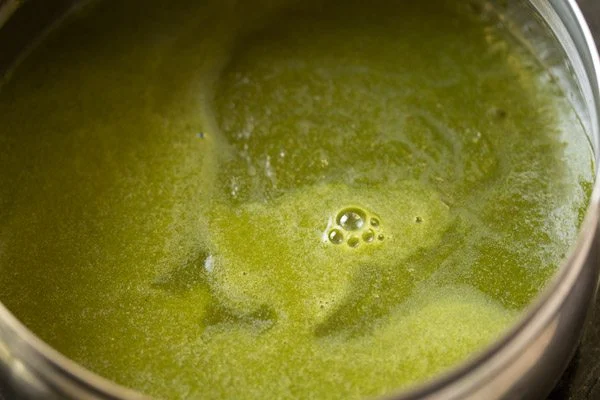
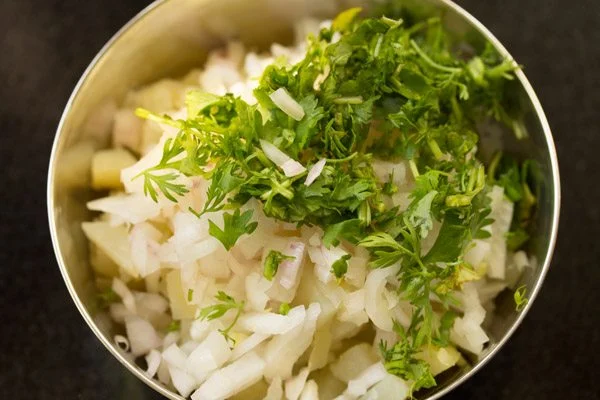

Pani Puri
Pani puri is an immensely popular Indian street food of crispy, hollow, fried dough balls (puri) stuffed with boiled potatoes or steamed moong sprouts or boiled chickpeas or white peas curry (also known as ragda) together with spicy tangy water and a sweet chutney. Pani puri is a favorite chaat snack of many folks and ours too. With so many bursts of tastes and flavors in your mouth when you have pani puri, you just cannot have one 🙂
What is Pani Puri
Pani Literally translates to water and here the Puris are fried puffed crisp dough balls which are hollow. Generally, the water or pani is sour, tangy as well as spicy. This spicy pani is balanced with the addition of sweet tamarind chutney.
This sweet chutney is called as Meetha (which means sweet) Pani. The spicy water is called as Teekha (which means spicy) Pani. Both are added in the puri along with the main filling which consists of boiled potatoes, cooked chickpeas, moong sprouts or a thick dry curry made from white peas which is called as Ragda.
How to make Pani Puri
-
Rinse 1 cup tightly packed coriander leaves, ½ cup tightly packed mint leaves, 2 to 3 green chilies and 1 inch ginger very well in water a few times. Drain all the water.Peel the ginger and roughly chop it. Also chop the green chilies. Roughly chop the coriander leaves and mint leaves. Don't use the stem of mint leaves as they can make the spiced water have a bitter taste. Only use the fresh mint leaves.

-
Add coriander leaves, mint leaves, ginger and green chili in a grinder or blender jar. For a less spicy pani you can add just 1 chopped green chilli.
-
Add 1 tablespoon tightly packed tamarind and 3.5 to 4 tablespoons jaggery powder or grated jaggery.
-
Now add 1 teaspoon roasted cumin powder, 1 teaspoon chaat masala and salt as per taste. You can also use a mix of black salt and pink salt or regular salt. I personally prefer to use either black salt or edible rock salt.

-
Add ⅓ cup water and grind to a smooth consistency.
-
Remove the chutney to a bowl or a small pan.

-
Now add ½ cup water in the grinder jar and swirl the jar so that the chutney at the sides of the jar gets mixed with the water.
-
Add this water to the bowl containing the chutney.

-
Then add ½ to ¾ cup water. You can add less or more water depending on the consistency you want. But do not add too much water as then the taste and flavor of the spiced water reduces. Also check the taste and if required you can add some more jaggery or salt as required.

-
Mix very well. Cover the pan and refrigerate the pani. Before refrigerating you can also add 1 to 1.5 tablespoons of salted boondi.
Making potatao filling for pani puri
-
Boil 2 to 3 medium-sized potatoes. You can boil or steam the potatoes in a pan, instant pot or stovetop pressure cooker adding water as required.When warm, peel them and chop them into small cubes. You can also add some steamed or boiled moong sprouts. Some finely chopped onions can also be added. I have added 1 small-sized finely chopped onion.

-
Add 1 to 1.5 tablespoon chopped coriander leaves.

-
Then add ¼ teaspoon red chili powder, 1 teaspoon chaat masala and 1 teaspoon roasted cumin powder. Also add salt as per taste.

-
Stir and mix very well. Keep aside
Assembling Pani Puri
-
Keep everything ready before you start assembling the pani puri. The potato filling, pooris and the spiced water.
In the photos below, I have made sweet tamarind dates chutney, just to show the assembling. First crack the top of the puri with a spoon or with your fingers or thumb. Then stuff the potato filling in the puri with a spoon.
Add a few teaspoons of sweet chutney or as per your choice. The addition of sweet chutney is optional for the pani recipe shared in this post.

-
Then add a few teaspoons of the green spiced water or as per your choice

-
The pani puri is ready to serve. Pop in your mouth, eat every bite and enjoy the burst of various flavors and textures. Make sure to eat them immediately as you prepare each puri.
They have to be had immediately. Or else the puris become soggy. To make a Mumbai style pani puri recipe, use ragda or moong sprouts as the filling.